From Eclipse main menu, choose "Run/Run Configurations" and choose option to create a new launch configuration
Enter the following:

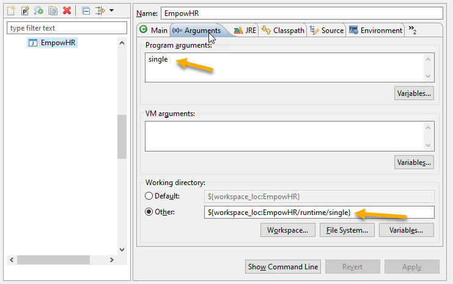
This is now ready to run.
Here's a list of icons that we will use along the way:
Whiteboard: capture ideas.
BizRule: mark business requirements (rules) for the application that we're building.
Review: used to recap what we just did before moving forward.
CheckPoint: allow you to get caught up with the latest Model changes and sample data.
ReGen & Run: use the code generator to regenerate the application, and then run.
Discuss & Learn: take time to explain some important concepts
and technical details about how the system works.
Continue working on the Model: after a discussion.
Show the screen shots of final App here qqqqqqqqqqqqq
Along the way, we'll give extra details on how to use OABuilder, generate the code, and run the application.
The demo that we will be building will allow the employees of our customers to earn points. The points are then used to purchase items from a list of choices specific to the type of award and the company offering the reward.
These customers are companies that have hired us to manage employee award campaigns.
The name of our platform will be "empowhr", and we need it to be highly configurable, so that the customers are able to create a dynamic experience and tune it to match their company preferences.
Our goal is to be able to build a single platform, that can run as a distributed platform. This means that we want our software to be able to scale and run hundreds of company campaigns, with over a million users, and expect an average of 500 users at a time, with spikes as high as 25,000 users.
For our Proof of Concepts, we will deliver:
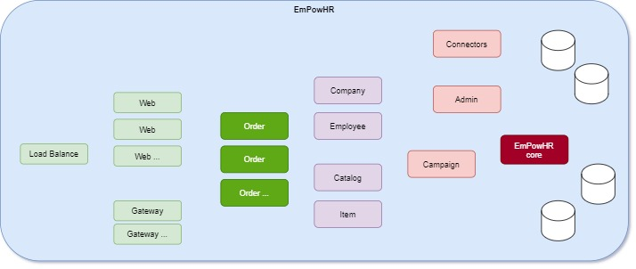
The production platform would look something like this. Locally, we will be able run
as a single user instance, or as distributed as we want - clients/server, microservices, etc.
We'll pull it up and make a copy using menu option "File/Save Model As ...", naming it EmpowHR.
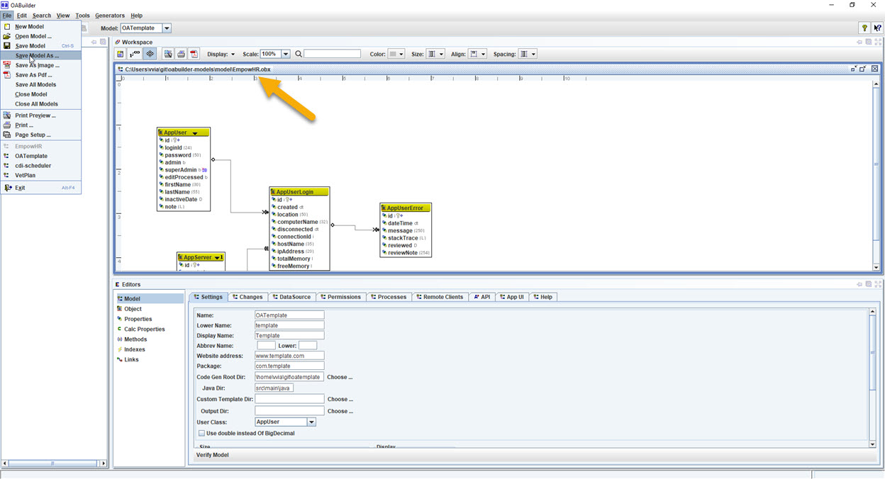
Next, use the Model Editor to configure this new project.
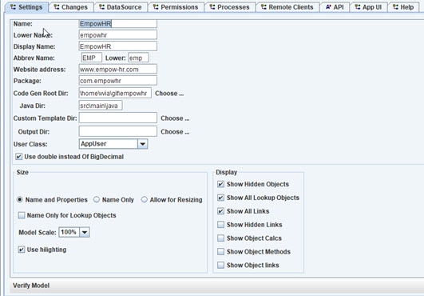
Next create the directory entered into "Code Gen
Root Dir".
The project is now ready to be generated. This will allow us to see the application as we move
through the demo. Click on menu item "Generators/Generate All" and select Ok. This will generate the project in the directory that you entered.
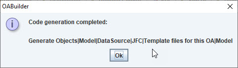
Create a new project in your Java IDE. Here, I'm using Eclipse:
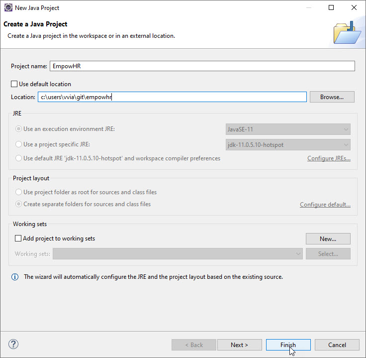
Make sure to change Location to the
directory that you entered for the Models code gen directory above.
Your project will look like this in Eclipse project explorer.
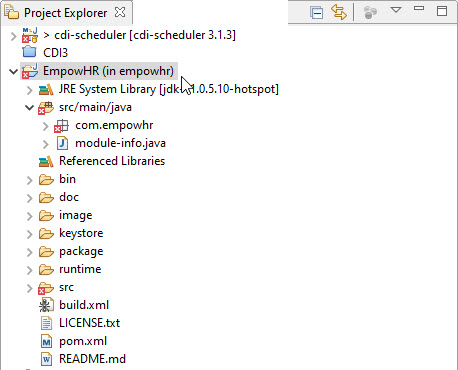
Set up the project to use Maven for building. Do this by right clicking on the project name, as follows ...
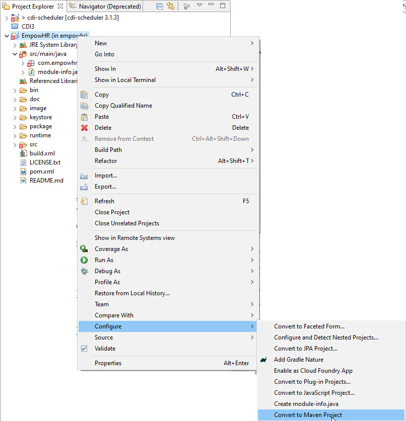
We're now ready to run. We have the option to run as as single user, and as multi user (client, client UI, server, webserver, and more).
The runtime
directory in the project has subdirectories for each runtype to use as the "working directory".
Running as a single user, do the following from Eclipse to set up to run as Single User mode:
From Eclipse main menu, choose "Run/Run Configurations" and
choose option to create a new launch configuration
Enter the following:
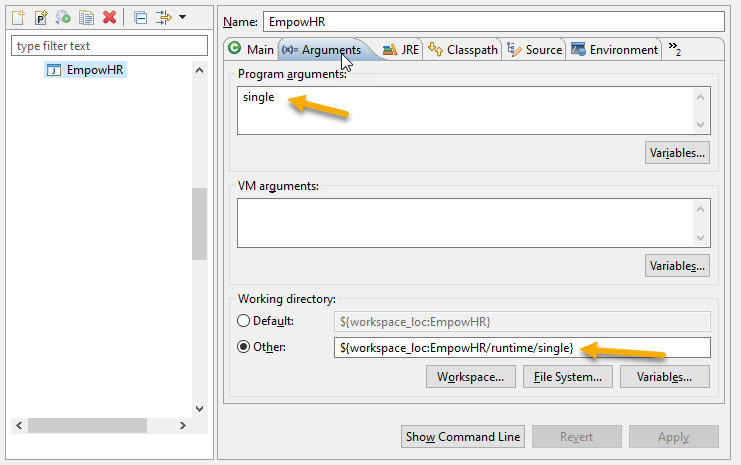
This is now ready to run.
Running the new App looks like this.
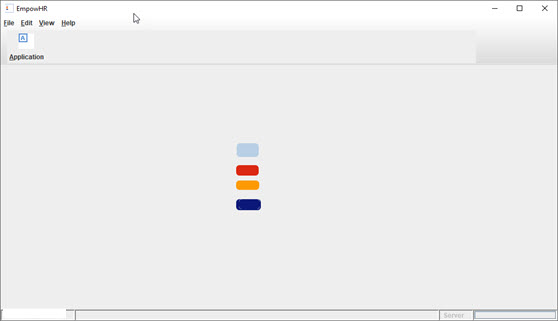
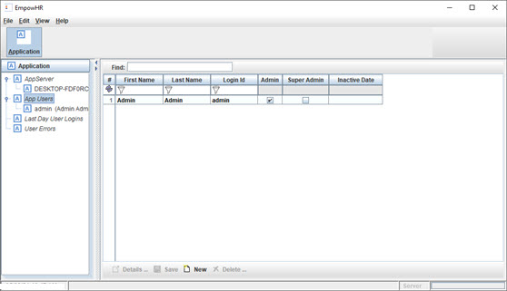
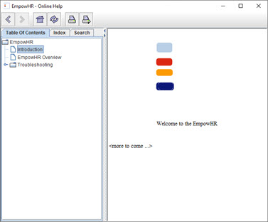
This is starting point, that will expand as we add and change the model.
Quick note: this same app can be ran as multiuser and split into multiple services at any time. For now, we'll use the single user
runtime option.
The runtime directory looks like this.
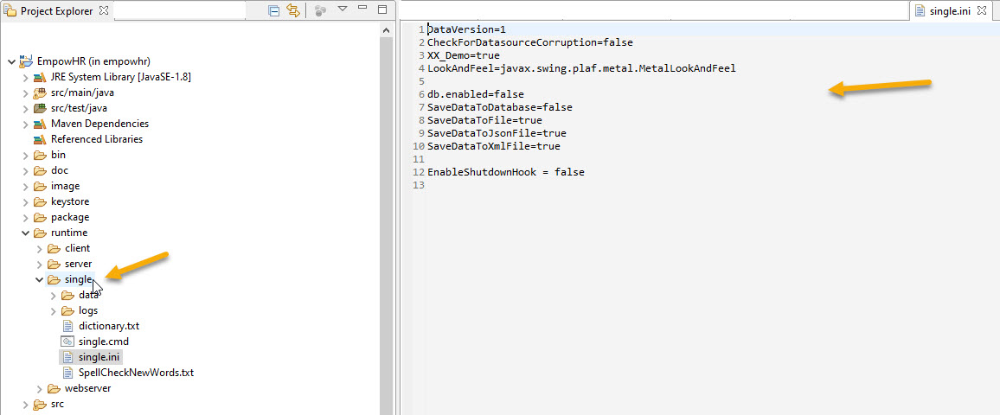
Runtime directory:
The file single.ini is used for runtime config settings for single user runtime mode. It has settings for saving the data to file, and loads it into an in-memeory database at start up.
We'll switch over to a database later. For now, the in-memory DB does everything you need for queries and saving.
The default config settings can be found in the source
code, located in directory com/empowhr/resource, see files values.properties and Resource.java for more info.
Now that we have it running, we'll go back to the model.
Let's add the main Objects, starting with Company. Click on the workspace toolbar "create new Object" (far left). This will create an empty object in the workspace
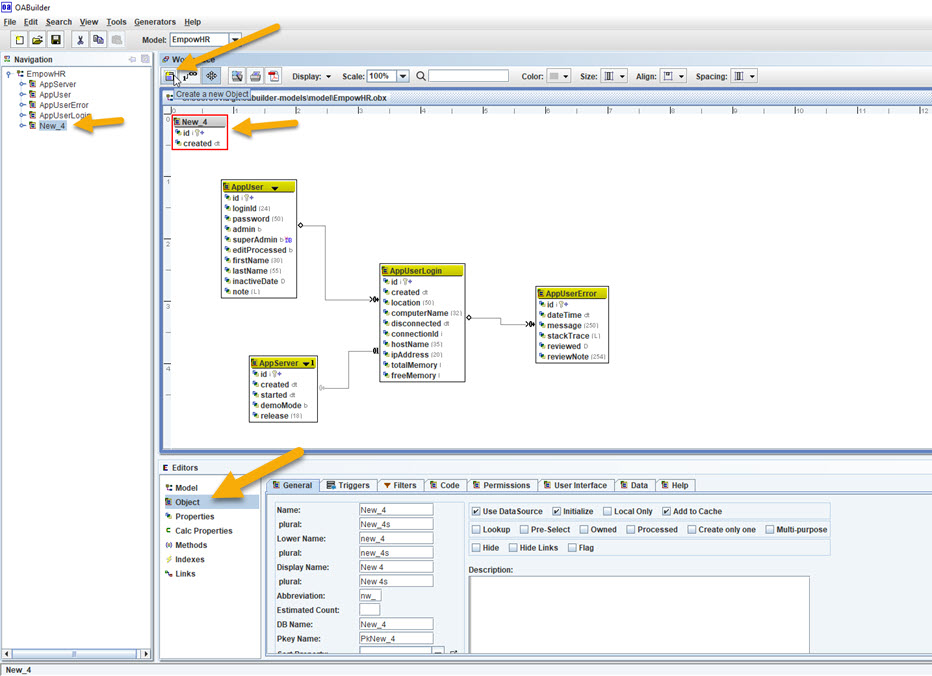
Use the Object Editor to make the following change:
Change the Object name to "Company", and the other fields will automatically be updated to match.
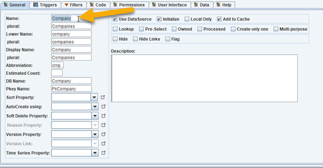
That's all we need for now, let's add some properties. The properties for "id" and "created" are already added by default.
Note: the Id property is an auto assigned sequence number, and is the unique identifier - a good idea to use for all objects.
To create properties, let's start off with "name".
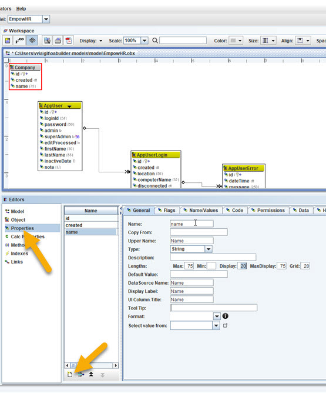
and add a abbrevName
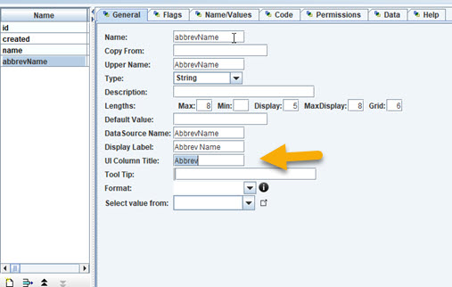
Change the UI column title to "Abbrev".
Ok, now we have a Company Object, with properties. Let's update a couple of other things in the "User Interface" tab.
Select name as the "Display Property".
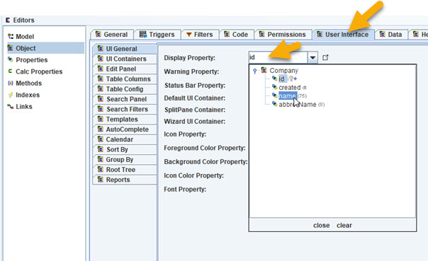
While we're in the UI tab, let's go ahead and add the table columns for Company, and the Search properties.
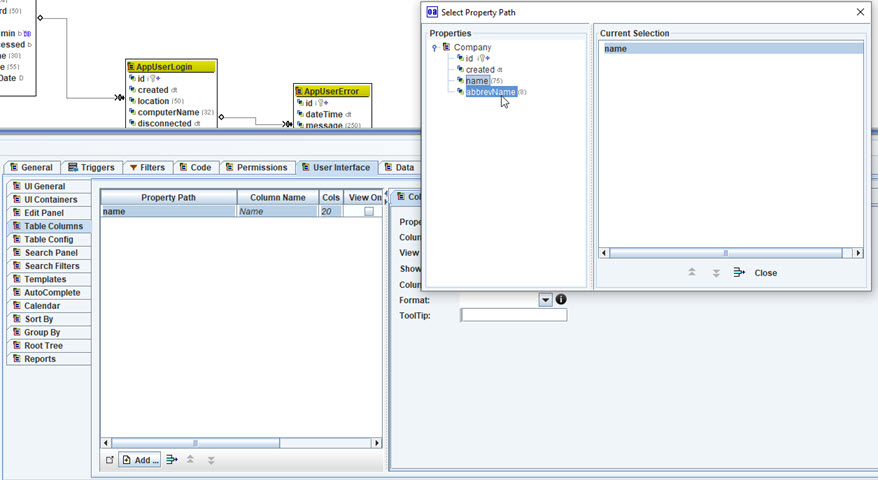
Table columns.
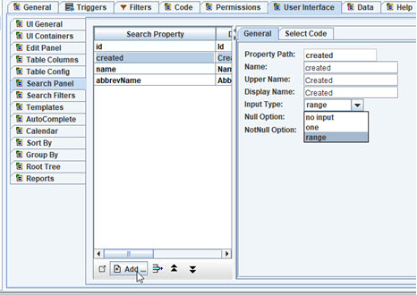
Search properties.
The Company Object is now created with a few properties. We can now add to the Main UI and test it.
Adding to the Application UI is done by going to the Model and choosing App UI tab.
Add a new node for "Company" by clicking the new button and using mouse to drag into position in the tree. Change the name to "Company".
Click on the "Add ..." button and select Company from the popup.
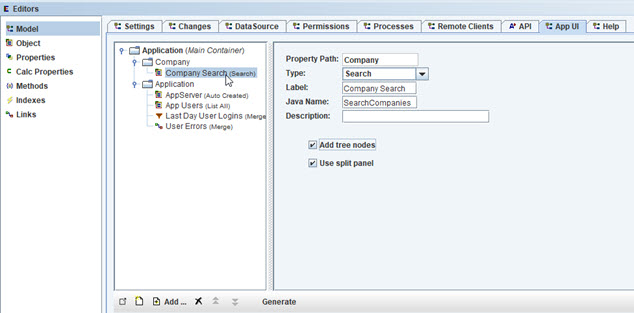
Note: always save your model changes. By default, all previous versions of the model will be stored in a backup subdirectory under the
directory where you are saving your Model.
example: ./backup/202105011310_EmpowHR.obx
ReGen & Run:
Click on menu item "Generators/Generate All" and regenerate the application, and rerun the config for EmpowHr.

This shows the Company search window.
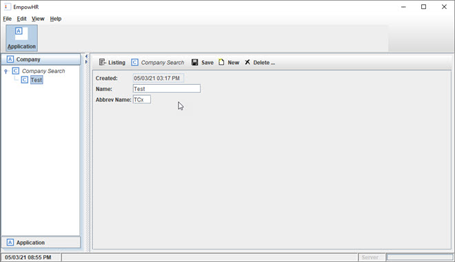
This shows the Company editor.
Review: we created the first Object for Company and are able to create new, search and edit/update/delete.
Let's take a moment to look at Code. The code generation uses a combination of techniques:

The Model package has the data/entity objects ("./model/oa/*.java"), and the "./model/*Model.java" classes are used to configure the object relationships and rules.
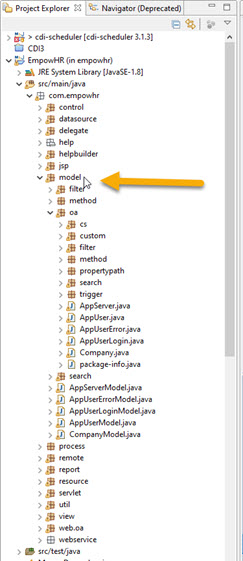
The View packages have the User Interface classes, each named after the Model Objects.
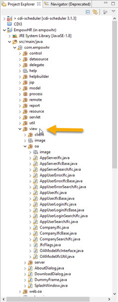
The Resource package has runtime parameters and default values.
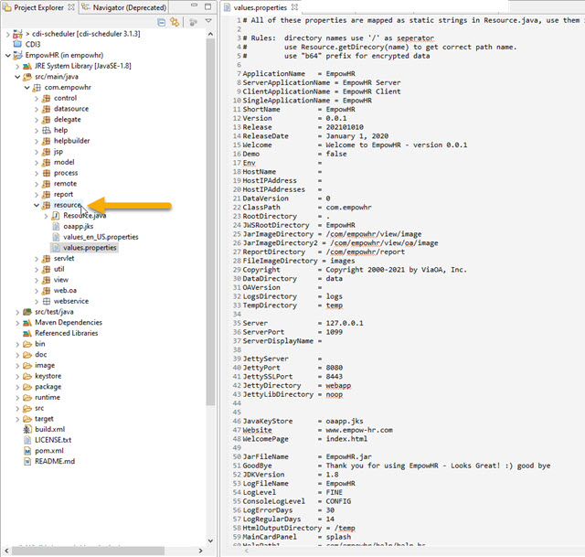
For now, that's a good start for review code, we will look more later.
Now, create the following three new Objects:
click the new Object button on the workspace toolbar, set the Object name, drag object to match screen shot.
then select all three (mouse drag to rubber band around them), and select a color green for them.
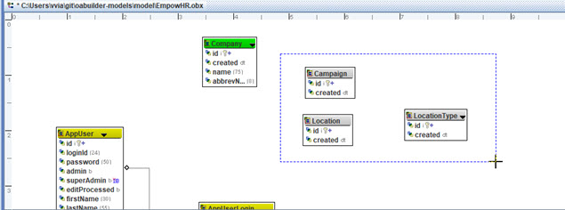
Next let's create the relationships between these Objects, starting with LocationType - BizRule: "A Company has many of it's own Location Types", which is used to describe the names of a company's locations.
"owned" means that the Location Types belong to a single Company, and not shared with other Company ... each Company has it's own Location Types.
For example: Region, Territory, City, ...
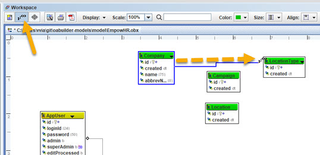
Let's change the relationship to "owned", which means that it is only for the Company that created it, and they are treated as an aggregate (one unit).
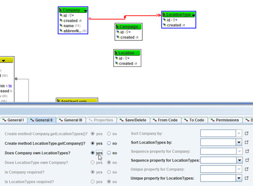
We need one more thing for this, to be able to keep the order that they are in. To do this, we create a property that is
a number, so create a new Property, name it "seq", set type as "int"
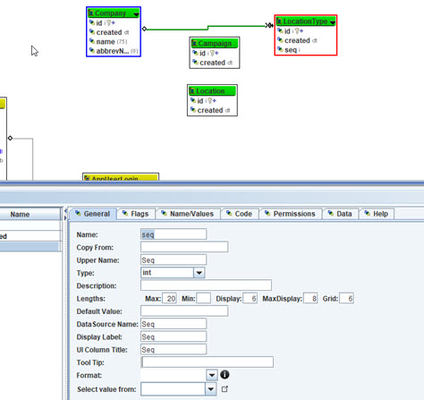
... and then set the the "seq" flag.
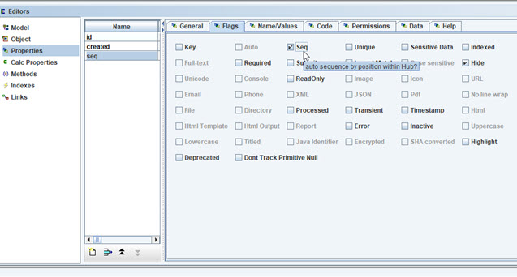
This will tell it to use this property to keep the sort order, so that it can make sure to load it in the same order.
Now, let's use the "seq" property for the link ...
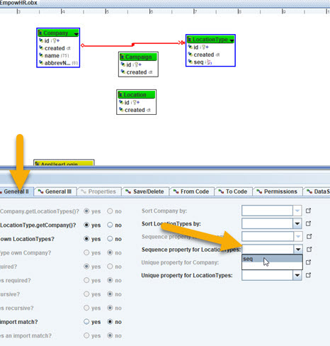
The Company.LocationTypes will now be auto sequenced in the order that users position them.
You will notice that the link shows a "S" icon.
Note: "Company.LocationTypes" is a property path, an important concept for object graphs.
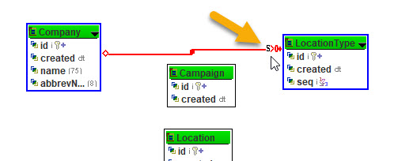
Next, let's add a couple of things to LocationType, and then we'll regenerate and run again.
Add a new "name" property. Notice that for the "Lengths", 25 is max input size. The display size is the default size of textfield, and max display is to allow the textfield to
grow to a length (usually the max). The grid length is for the column in a table/grid listing.
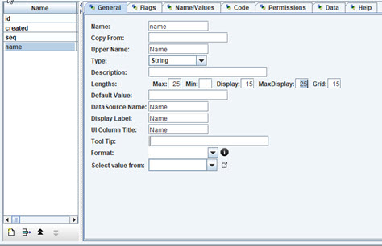
Now, lets go to the Object UI, and set the display property to "name" (under "UI General" left sub tab).
Under "Table Columns" subtab, add name. For "Search Panel", add "name".
Go ahead and regen and run again.
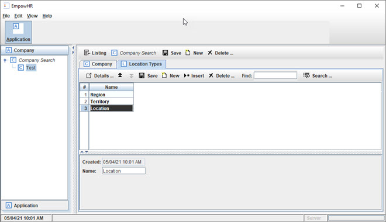
We now have Company.LocationTypes defined. This will be used in the next step, when we set up Company Locations, and how each Location will "know" it's Location Type.
We're now going to set up Locations so that it can be multi-level. This is done by creating a link to itself and flagging it as recursive.
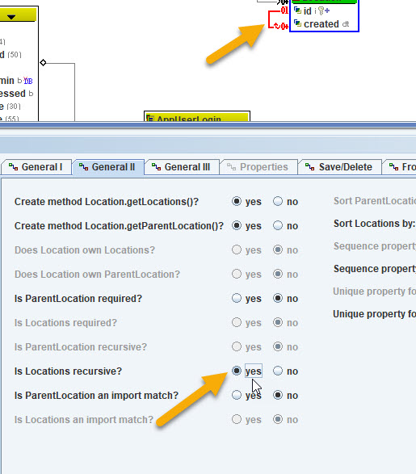
Let's add the following to Location:
create a property "name"
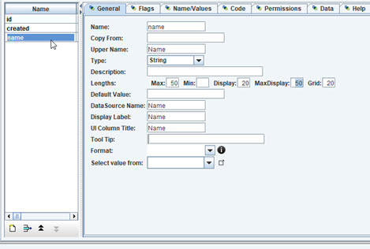
change Location UI to use "name" as display property ("UI General" left subtab), and add name to table ("Table Columns" left subtab) and search ("Search Panel" left subtab).
ReGen & Run
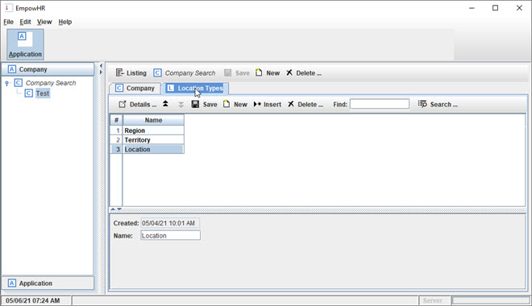
Next, we want to know a Location's LocationType. There are two options, the first would be to select one from the Location's Company list of LocationTypes (Company.LocationTypes). The second
is to have it automatically pick LocationType based on Company.LocationTypes list to match the position of the Location under Company (since Location is recursive/hierarchy).
We'll choose both, so that a Location.LocationType can directly/manually set, else it will default to the Company.LocationTypes with same position.
To do this, we'll first create a Location.LocationType link. Right click the Location object and click new link, or click the link button on the workspace toolbar.
Now we need to make a couple changes to the new Location.LocationType. First make sure the relationship is One LocationType, Many Locations, and that the names are
"Locations" and "LocationType".
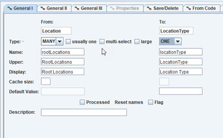
Next, we need to have choices for LocationType use the LocationTypes from Company.LocationTypes. This is done be going to the
the "General III" tab and setting the value for "Set Location Type from:" to Company.locationTypes.
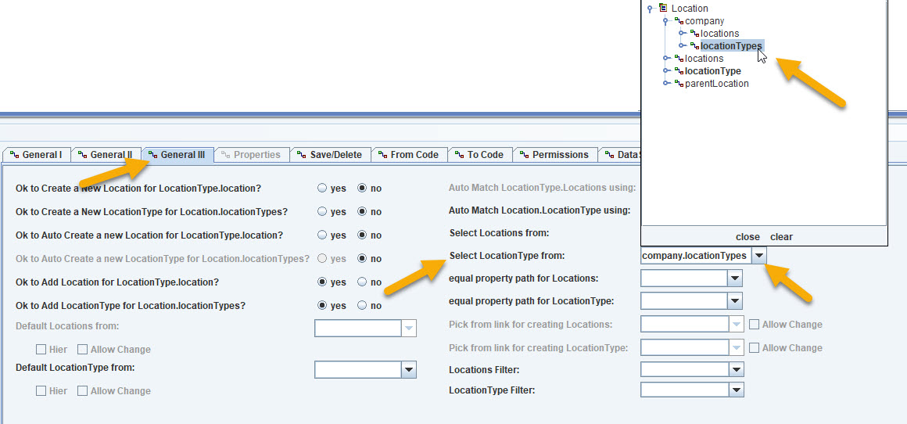
Do a codgen and rerun the App
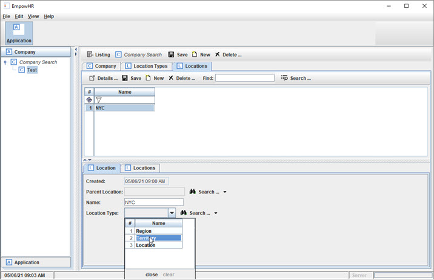
Ok, now click on the link Company.locations, go to the "General II" tab, and set "Is Locations Recursive" to checked.
ReGen & Run: then add some data.
If you click on sidebar "Company Search", and then click the "new" button.
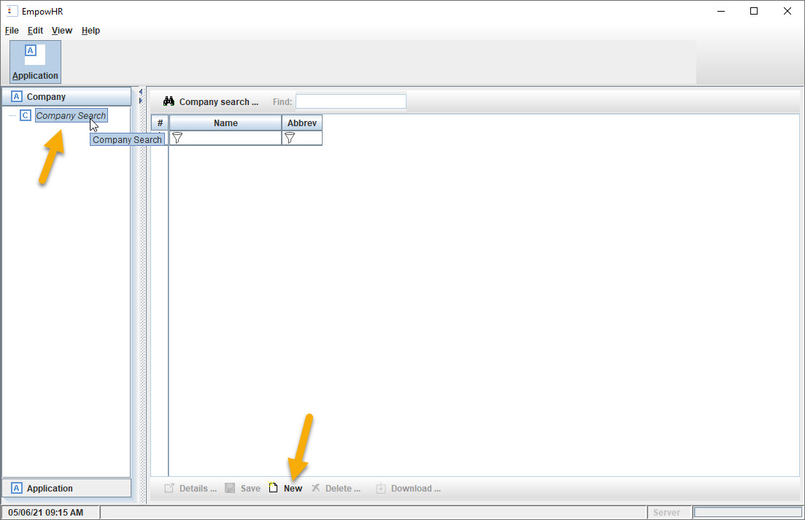
Set the name of this new Company to "TestCorp", abbrev name "TC".
Click on the "Location Types" tab, and use the "New" button to create and match the following list:
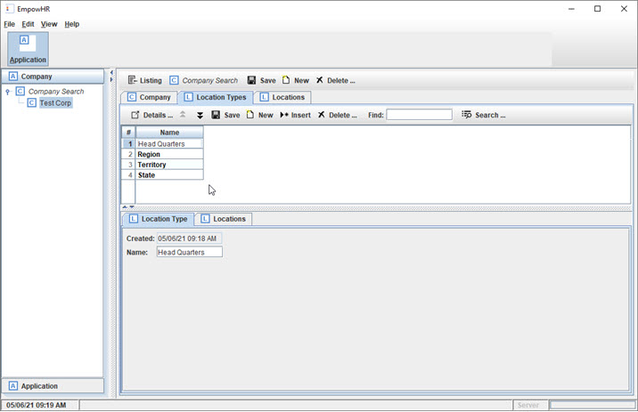
Close the Application, and rerun again. Click the toolbar "Application" button, then click the sidebar "Company", notice that no Companies are showing.
Click the "Company Search" button, and then click the "Run Search" button to get a list of all of the Companies. Your new Company will be on the list, and
under the Company side bar.
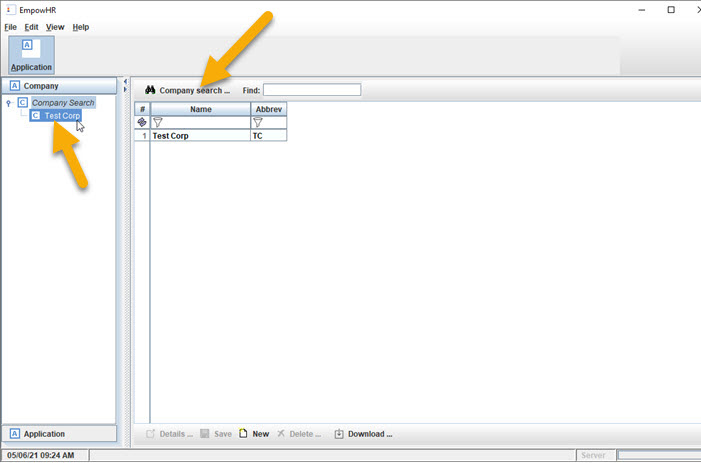
Note: the data is stored in the "runtime/single/data directory", in multiple formats. There are also saved copies at specific time points.
To edit a Company, either click the Company showing in the sidebar "Test Corp", or you can click it in the search listing, and then pop it up by clicking the "Details ..." button in the bottom toolbar.
The first shows it inside the main window, then second will show it in a popup window.
Now, let's add a Location. Go to the following and add a new Location.
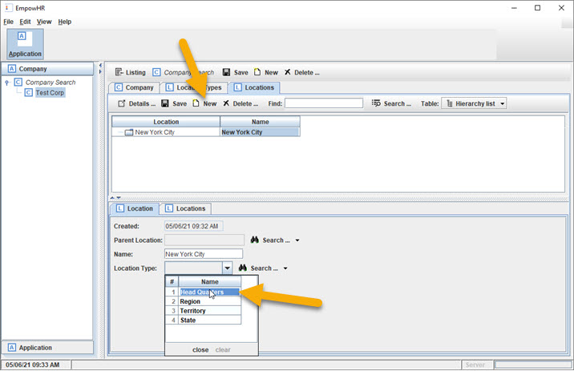
Notice that the Location list will be recursive and display in a tree table.
Next, we we want to allow the Location.LocationType that has not been assigned to default to the specific value in the Company.LocationTypes.
We will do this by creating a "Calculated Link" between Location.LocationType and call it "Location.calcLocationType".
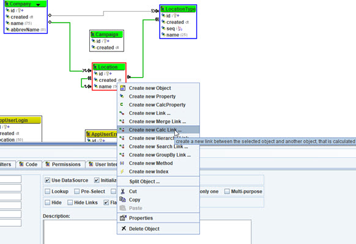
Let's set up the Link.
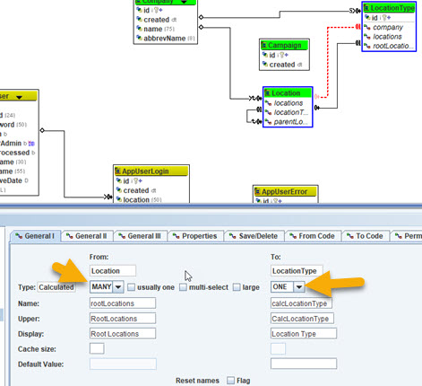
Now, we need to set up the calculation. The first thing is to go to the "Properties" tab,
and click "Add ..." to add property paths: "Company.locationTypes", "Company.locations", and "locationType".
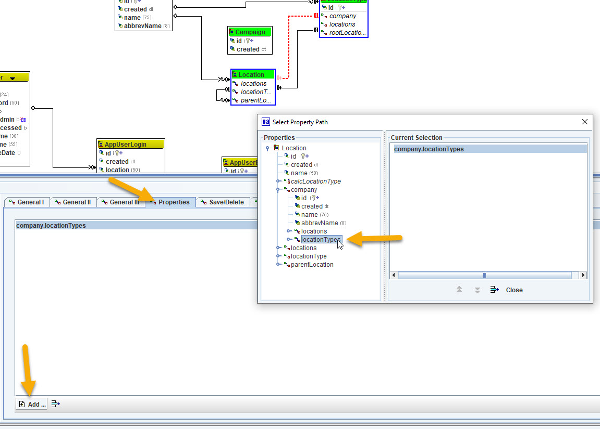
This is data that is used to determine the correct Location.locationType, and needs to be recalculated if any of the values change.
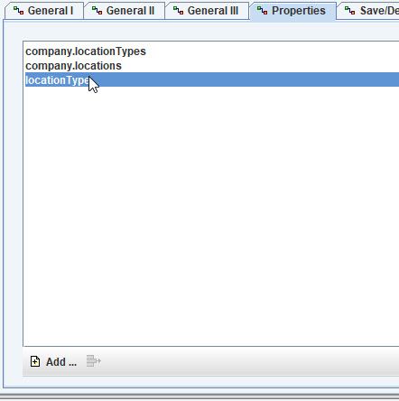
Go to the "From Code", and add the code that will be used for the calculation.
Click the "Generate Code" to have a template created to enter code.
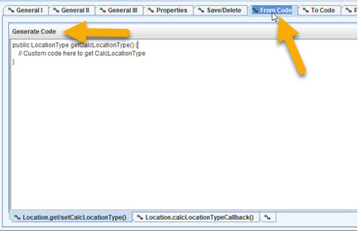
Enter code, that shows that it first checks to see if a LocationType is assigned, else it will determine based on the Company.LocationTypes.
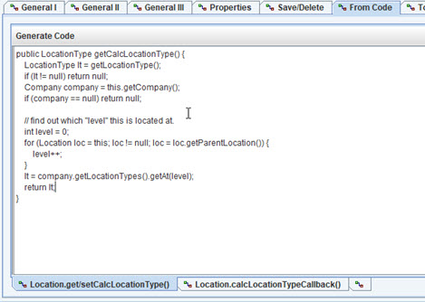
Review: We now have Company.Locations, that can be a hierarchy. The Company has a list of LocationTypes, that can be directly assigned
to a Location, or use the correct value from Company.LocationTypes.
Let's add the Location.caclLocationType to the Location table columns.
ReGen & Run
The Location.calcLocationType will either be the assigned LocationType, or if empty (null) it will be the same as the Company.LocationTypes(pos), where pos
is the position of this Location in the Company.Location hierarchy.
Run as Server - first, copy the files "ObjectCache.bin" and "data.bin" from "runtime/single/data" to "runtime/server/data".
To run from Eclipse, choose menu "Run/ Run Configurations ..." and make a click on "EmpowHR", change name to "EmpowHR single".
Then click the duplicate button (upper left toolbar) to create a duplicate, and name it "EmpowHR server".
Go to the "Environment" tab, and change single to server.
Run this, and you will see the server UI.
Follow the same steps to create an Eclipse runtime for "client", and then run.
Login using "admin"/"admin" for user/password.
Run two clients, and go to the company location that was created.
Now, change the location type and notice how the other is automatically updated. The change causes a "reaction", causing the calcLocationType
to be redisplayed on both programs. This behavior is described as an "observable & reactive object model", and is main feature of
the OA libraries. This allows any of the model objects to be distributed and synchronized across servers - realtime or eventually.
Back to discussing databases ... the model objects are set up to work with any datasource, all combinations. Currently, our demo application is using an in-memory datasource that supports sql/OQL and is persisted to xml, json, java binary. The client apps are using a client datasource, which remotely interacts with the server's datasource. Caching is included, and "hinting" is used when fetching data to make it more efficient when making a trip to another server or disk. For example, getting a Company is smart enough to know about other information that will be needed close to the Company (reference data, othere Companies, etc), and sends this with the request as "hints". The hints are based on the object graph and how it is "wired" (used / configured) in the part of the application that is requesting data.
For example: a Company is using it's LocationTypes to set the Company's Locations.locationTypes.
If the Company X is not in memory (cache), then it will be requested from datasource. If it's running on a client, then the
datasource knows the server(s) to get Company from. The computer could be using a database directly. Either way, it "looks" at how the Company will be used and is able to "hint"
to "also send the Company.locationTypes, Company.locations, etc." if it has time. Otherwise, there's a good chance it might be calling for it soon, so go ahead and
have it ready. This allows it to be dynamic and smart about how and what is being delivered and acts as a JIT (just in time) access for your model objects. The "goal"
is to act like the objects are in the local cache.
Another example: selecting all Orders for an Employee, to display and allowing editing. The application code around this looks at how the model objects are "wired"/connected and will see that the OrderItems, and other reference data could be needed (based on user navigation). When the method is called for order.getOrderItems(), it will look at other unloaded reference on "order", and along with the other Orders close to this Order from the collection of Order objects from the query.
CheckPoint #1 was created before starting this next section.
use the instructions above to use the checkpoint files.
Ok, close the Server and Client Apps, and we'll go back to running as single user, and continue building our Model.
The last model change that was made was to create the calculated LocationType.
We're done with that and can create the "Company owns many Campaigns" Link.
First, let's add the following Properties to Campaign: name, startDate, endDate.
Make the following change for Campaign:
Display Property: "name"
Edit Panel:
Also, make sure to check the "include" column for "Id".
for UI table columns
... and select all properties for search
Now create a link from Company to Campaign (1toM) and make it an owned link.
... and go back to Campaign table columns and add Company.
Do a codgen and rerun the App as single user.
Do a Company search, select your "Test Corp" Company, then then create a new Campaign/
Now let's add a validation to campaign.endDate. It cant be before startDate.
Do a codgen and rerun the App as single user. Try to change the Campaign.endDate to be before the startDate.
Let's go ahead and use Callback for another user interaction. If the Campaign.startDate is changed, and
it's previous value is less then today, then we should have the user confirm the change.
Set the "sort order" for Company.Campaigns to be by startDate.
We could have (might do it later) used a seq property for the sort order.
Review: We have added Company.Campaigns.
Next, let's go in fast forward and layout a few groups of the Objects
needed Employees, Awards, and Items. Then we'll connect them together and start filling in
details.
Here's the story - our customers are Companies, that have Locations, that have Employees.
These Employees receive Awards, that can be redeemed for Items.
The Items are in a Catalog, that is organized into Sections. Each
Award has an AwardType that is associated with the Catalog that can be used to choose an Item.
Each Item can have options (ex: color, size, etc).
Dont worry about creating these, instead use the saved Model from "checkpoints/EmpowHR_2.obx".
This is the "mode" that you can be in when talking through the business requirements
and building a model for it. The next "block" of changes will be for the shopping cart and
creating and managing employee Orders. For now, we'll zoom in and get this last block defined
and tested.
Let's color code first. Set the main Objects to green, to have them stand out, and have
the other Objects unflag so that they are gray.
Let's start with Employee and add the following properties.
The password will use a one-way encryption and needs to allow for some "bloat", so the size is set to 70.
Create a link for "Location.employees" (one2many). This is not an owned link, since an Employee
can be moved to another Location. We do want to make sure that Employees available to be added
to a Location must be in the same Company. Otherwise, an Employee could be added to any Location,
causing major problems. To define this, go to the Link tab "General III" and set the equal property
value for Location and Employee to be the common Company.
Location.Company & Employee.Location.Company. This tells the Model that they both have to match
for it to be valid.
Let's create a Calculated property for Employee "fullName". Select Employee in workspace,
select the Calc Property Editor, and click the new button.
Set up the dependent properties as shown.

Add add the following for the code.
Set up Employee UI, change display to "fullName", and set up "Table Columns" for first, last names,
and have search match this:
For the search, set userId, location and company to have "null option" checked.
Do a codgen and rerun the App as single user.
There's a compiler error with the calculated property Employee.fullName.
Change the code to this and regen.
Do a codgen and rerun the App as single user.
Ok, now we have Location.employees, but need to add a few "user friendly" items.
First, there's no way to find an Employee without "drilling" down from Company and Locations.
Let's create an Employee Search from Company.
Right click the Company Object in the workspace, and choose "Create new Search Link ...",
Do a codgen and rerun the App, bring up your Company (using Company Search), and then use the "Search Employees" tab to find Jonh Doe.
There's a few things to notice in the UI, and how well it is associated with the Model.
From the search for John Doe, from the Company, you can popup Employee using the "Details ..." button.
From there you can click on the Location "Details ..." button, and then see John Doe in the "Employees" tab.
The UI navigation follows the Model's Objects & Links. The Application is treating this as an Object
Graph, which means the Objects are not just copy of data from a record in database.
Changing "John Doe" to "John Dox" from the Location's Employee table shows how the "other" John Doe
is also changed. This is because the program and Object Graph are smart enough to be using
the same instance. Any other part of the Application that has Employee John Doe (id=1) will use the same
object and not create a duplicate.
The Company Employee Search is helpful, but an Admin would want to search all Employees.
Let's create a full system Employee search, and update the UI with a new title bar button for searching.
We do this from the Model / App UI tab. We're first going to change the UI hierarchy so that it will have another
layer/level.
The UI generator looks at the "depth" of a tree to determine how to build the navigation layout. The top level is for main toolbar, next level is side bars, and additional levels will allow expanding the side levels.
Click on the new button (bottom left) to create a new node and then drag-n-drop it to under the Application (root node). Name this node "Company" and then drag the other "Company" node under it.
Create another new node, name it "System" and drag/move it to Application. Click on the new node and name it "System" for now.
Drag node "Application" and drop on "System" node.
Do a codgen and rerun the App, make sure it's still working :)

CheckPoint #3 was created.
That includes the model "EmpowHR_3.obx", and data/ObjectCache_3.bin & data/data_3.bin.
See instructions above on where to copy and rename the files.

Set up another company "ABC Company", with one location type, and then add one location.

If you go to the "Search Employees" tab and do a search, there wont be any results.
Select the "Test Company" and redo the search to see "John Doe".
Go ahead and create an employee for "ABC Company" main location with name "Mary Smith".
Let's make a few changes to Employees before moving on.
Add new properties for hireDate, inactiveDate, inactiveReason.
Make inactiveReason visible only when there is an inactiveDate.
Make the Employee recursive by recreating a self reference/link, so we can know the management structure. Use the link button to do this,
then go to "General II" tab and set "Is Employees recursive?" to yes.
We also need to make sure that Employees belong to the same Company.
Also, make the Link Location.Employees recursive.
Do a codgen and rerun the App, and make sure we can get "John Doe" some help from a new Employee.
Ok, the Location.employees recursive is not going to work for us. Instead we need to have Company.employees as a recursive/hierarchy,
and Locations.employees as the Employees that work from that Location.
So, we'll undo a couple of things and move forward from there. The nice thing is this is why
modeling is so helpful, making it easy to try things and make changes.
Go back to the Location.employees link and set "Is Employees recursive" to no.
Go back to the Employee.employees link and change the name from "parentEmployee" to "managerEmployee".
Create a One2Many link for Company.Employees. Set "Does Company owns Employees" to true. "Is Employees recursive" should be yes.
Also, go back to "General I" tab and set the "Cache Size:" for Employees to 100. This sets the number of Company.employees that will use
cache, before allowing them to be re-selected from Datasource.
Delete the Link for Company.searchEmployee - and we'll next recreate it using "Company.Employees" as the property path.
Right click Company, "Create new Search Link ..." and select "Company.employees".
Make the following change to Link Location.employees, "General III" tab, set "Select Location from" to "company.locations". Review: we just did some rewiring, so that we have "a Company owns a hierarchy of Employees" that "belong to a Location".
I moved the Objects around a bit, go ahead and use the next CheckPoint #4.
CheckPoint #4 was created
Use the instructions above to use the checkpoint files.
Here's what Company is looking like now.
Couple of notes: the demo application is being generated straight from the model. The code generators
have all of the information to do this, including the custom code that we added.
The recursive "Company.employees have employees" has multiple ways for viewing.
Before moving on, let's look at the model.
This shows how the Locations and Employees are are set up so that they are under the same Company.
Let's create some Object Filters.
We want a list of Employees that do not have a HireDate assigned.
Click on the Employee Object, select the "Filter" tab, click "New" button
and make the following Filter.
Go to the "Dependent Properties" and add "HireDate".
Go to the Code tab, and add the following for the Query.
This is how it will initially load from datasource.
Now add the Java code.
... also fix a typo, change "HireDate == null" to "hireDate == null".
Regen and rerun:
Now give "John Doe" a hireDate.
Change the Table to "flattened", and choose "No Hire" from filter dropdown.
That's a pretty simple Filter, but it gives you the idea of how it works.
A filter be created on anything, and it will be dynamically updated.
Next let's look at how to create a "Test Client", which is a client application that can connect and interact with the Server.
We want to run the Server and have another program connect to it and select Employee John Doe.
From Eclipse, go to "run configurations" and find and make a duplicate of your "EmpowHR client",
and make the following changes.
If you run it now, it will try to connect to a server and fail. Let's run the server, but first copy
ObjectCache.bin & data.bin from runtime/client/data to runtime/server/data.
Then run as Server, then run your testclient.
The testclient connected to the Server and then exited.
Now, pull up file TestClientController.java, and make the following change:
Rerun and you will see console output showing John Doe Employee object, and then it will disconnect after 2 seconds.
Let's now create a "New Hire Certificate" for John Doe.
We want to be able to have a template created for the Company or Location and allow it to
be used for an Employee.
Click on the Company Object and create a new property.
Click on the flags tab, and check "Html Template".

Regen and rerun as Single User.
We'll go over all of the things that you can do with the editor in another tutorial.
For now, it's worth noting that you can have a background image, which would make the
certificate look great. Other data tags can be used to dynamically create as a report or pdf.
What we want to do next is to allow a Location to have their own employee certificate, instead
of the one that is in the Company.
Create the same project "certificate" in Location as you did for Company.
Use copy and paste to save time. From the left side, right click on the Company.certificate property and
choose copy. Then right click on Location and choose paste.
Regen and rerun as Single User, and see how the Location now has a Certificate tab.
Now we want to be able "know" what certificate to use for an Employee.
Both the Company and Location has certificate property, we want to have
the Employee.location checked first, and if empty then keep checking the parent Locations
since it recursive, before using the Company.certificate.
To handle this, we'll create a calculated property in Employee for "certificate" and
use a finder to get the value.
Click on the Employee Object and create a new Calculated Property named "certificate".
Go to the "Dependent Property" tab and add property paths: "location.certificate", and "company.certificate".
For the "Code" tab, enter the following:

Regen and rerun as Single User, and see how the Employee Certificate tab matches the first value found in Location or Company.
Note: setting a Location hierarch would also follow the Location hierarchy itself.
Next let's add an Image Object to the Model. We'll use it as a general purpose place to store images. Initially,
we use it for Employee phone and signatures.
Create a new Model Object and name it "Image". Click the checkbox for "multi purpose".
Create the following property to store the image.
Go to the "Flags" tab and check "Image".
Now create a link between Employee and Image, set type to OneToOne.
Regen and rerun.
Image editor.
The name of our last Object "Image" caused some problems, since there are other classes with the same name.
We can fix that by changing the Object to "AppImage", and everything else will adjust (rename).
We will also need to delete the files that were generated for the "Image" Object, since OABuilder does not
delete any files.
From Eclipse, you can do a "Search / File ...", and select Image*.* to get a list.
Then use the following to delete all of them.
Go ahead and use the next CheckPoint #5. Get the model and the data files.
Regen and rerun.
Let's add JavaDB for now and get an idea how the model generates the database's scheme.
Go to the Model Editor, and click on the "DataSource" tab.
Set up to match:
Now that it knows what type of DB, theDatabase DDL script can be generated.
Select "Generators" from the menu, and click on "SQL Script ...", and it will ask for file name to write it to.
This script can then be used to create the database scheme.
That's the introduction, we'll get more into the database/datasource later and show some apps using various databases. Outside of config settings and startup, there isn't any Application code directly interacting with the database. The Objects have built in support to work with whatever datasources are being used, so it's pretty much automated.
One last thing on Database Scripts (DDL, SQL). The Model Editor's "Changes" tab keeps track of changes, so that an update script can be generated. These changes can be cleared once you have generated the script so that the database is then up to date with the model.
Let's continue with the Model. For the App requirements: "A Company can Awards to it's Employees".
We already have AwardType and EmployeeAward to the Model, so now we can link them up.
Create a link between Company and AwardType, to have a one2many Link (the default). Set this link so that
"Company owns AwardTypes".
Create a new "name" property for AwardType: click the new button, and then use the copy autocomplete to make
a copy of the Campaign.name property.
Use the Object Editor to setup the UI for AwardType, setting the table columns and the search properties.
Now, let's create a property for the type of AwardType. Add a new property named "type", as an "int".
Go to the "Name/Values" tab and add the following: "Unknown", "Service", "Achievement", "Other".
Go ahead and add this property to your UI table columns and search.
Regen and rerun.

Now, we want to be able to assign an Employee an AwardType.
Create a link between Employee and EmployeeAward (1toMany) ... "Employee can have many Awards".
Set "Does Employee own EmployeAwards" to yes ("General II" tab).
Fyi, setting the link to "owned" automatically makes other adjustments to the link.
One last thing, we want the User to select a Company.AwardType to be able to create the EmployeeAward.
Go to "General III" tab, and "Pick from link for creating EmployeeAwards", and set to AwardType.
Create a link between AwardType and EmployeeAward (1toMany) ... "an Employee Award has an AwardType from the Company".
Also, we dont need AwardType to have a method for getting EmployeeAwards, so go ahead and set it to "no" -
go to "General II" tab, and set "Create method AwardType.getEmployeeAwards" to no. Also, set "Is AwardType required" to yes.
Now, we want the EmployeeAward to be created by picking an AwardType from the Employee's Company list of AwardTypes ... "employee.company.awardTypes",
and we want them to only have one of each.
To model this, select the EmployeeAward.AwardType link, and set the "Select AwardType from" to match:
Also, an Employee is only allowed to have one of each AwardType (no duplicates). Do this, by making this change:
This will make the Employee.EmployeeAwards.AwardType unique.
As you can see, the relationships between the objects are also used within other links.
These patterns are used throughout modeling, and
OABuilder makes it easy to incorporate them to define business rules and logic.
Set up EmployeeAward UI for table columns and search.
I also made changes to the Model UI. I changed the first Company to "List All", and the second to a "Company Search".
Check out the Model "Changes" tab, to see all of the changes that we made since we cleared them earlier. If we had an existing DB (JavaDB in this example), then we would need to update it with these changes. The code generator menu has a menu item for "SQL Changes Script ..." that would do it.
Regen and rerun.
All of that work just for this one screen shot :)
This shows adding a new AwardType to an Employee, by selecting from Employee.Company.AwardTypes
If you try to add the same one more then once, it does not allow it.
Review:
We did some fancy links that all work together to automatically define and enforce requirements.
I created a CheckPoint #6 here.
Ok, I need to come up with a new requirement that will need us to create a "Link Merger".
A Link Merger is used to create a collection from a property path.
For this example, we want to have a "list of open Awards from Employees who are inactive".
To do this, we will create a filter on Employee, add processed date on EmployeeAward to know that it is no longer "open", and create a filter on EmployeeAward for open .
Click on EmployeeAward and add property "processed" with type "date".
Click on Employee, go to the Object Editor "Filter" tab, and create a new filter and name it "inactive".
For "dependent properties", we only need "inactiveDate", and for code:
Click on EmployeeAward, go to the Object Editor "Filter" tab, and create a new filter and name it "open".
For "dependent properties", we only need "processed", and for code:
Now, right click on Company and select "Create new Merger Link ...", which will bring up
property path chooser. Choose:
"employees:inactive.employeeAwards:open"
which means "for a Company, get the EmployeeAwards that are not processed for Employees with an inactiveDate"
It named the link "mergeEmployeeAwards", go ahead and change it to "mergeOpenEmployeeAwards".
And, change display to "Open Emp Awards".
Regen and rerun, and let's see how this worked out.
Go to the "Test Corp" Company and click on the "Open Emp Awards" tab.
The list is empty. Now go to Employee "John Doe" (remember him?), and give him an inactive date, and a reason if you want.
Now go back to "Open Emp Awards" tab.
So ... that's a Merger Link that uses a Property Path from Object to another Object, and allowing Filters. The other thing to notice is that it's real-time: a change that affects the property path will automatically keep the list updated - not by refreshing, but by adjusting with delta changes.
Let's take a look at the generated code. Pull up Company.java and go to method "getMergeOpenEmployeeAwards()".
The method is a small amount of code, that returns a list (collection) of EmployeeAwards. The annotation tells it the Property Path for the Merger.
That is all that is needed to make this work.
Internally, it uses a HubMerger, which will use the Property Path
to configure a tree structure that "knows" how to keep the list updated, by listening for specific changes
that affect the list. The things that it "listens" for are found by parsing the property path, and getting any
additional "dependent property paths" - remember, how we use these in the model? (ex: for calculated properties, filters, etc).
The HubMerger's tree structure is then able to be notified, which allows it to know how to update the list.
The combination of Property Paths (PP), dependent PPs, and being able to listen is core to how reactive models work,
and is directly related to Software Patterns like Model/View/Control (MVC).
Historically, the problem has been scaling. The cost of listening is too high at a certain point.
OA has been able to scale this by using a combination of listening with some other unique techniques. The cost is reduced
down to a very small size and stays small with large amounts of data (objects).
Another solution is "reactive streams", but there are boundaries and challenges when using them as the solution.
The solution ends up being a combination of observability through listeners, bubble up events, event streams, tree structures like what Merger uses.
Add remoting to the mix, and you have distributed synchronized object graphs. Sounds complicated, but the code is small and is built on a few core building blocks: Observable Object, Observable Collection, Collection that can be shared, Reflection, annotations, Object Serialization (all types, tech independent), Remoting, Communication (all types, tech independent), Persistence (all types, tech independent). I'm sure that I'm missing some items, but that's a good chunk of it.
BizRule: We just got a new requirement: all employees need to pass a series of company tests, and each one could have an AwardType. We can use this as an example to show another way to automate how Links work.
Create a new Object "AppTest" and add Name (String, max: 50, display: 15), and add all of the properties for the UI display, search & table columns.
Create another property "document", pick type "String Long", and check as Html in the "Flags" tab.
Now, create a new Link "Company has many AppTests", and make it owned.
Now, set up a new Link "AwardType has many AppTests", and set "create method AppTest.getAwardType" to no.
Now, set this new Link (General III tab) "Select AwardType from" to: "company.awardTypes".
Now we need to add a flag to AppTest to know if all Employees must take it.
Add property "required" and set to "boolean". Use the "Flags" tab to check "dont track Primitive null".
BizRule: all Employees need to take Company.Tests that are required.
Create a new Filter "Required", dependent property "required", and this for the code:
Now, we need to add support for an Employee.appTests that are automatically created if "Employee.company.apptests:required".
To describe it another way: "An Employee needs to take each required Company Test".
Create a new Object "EmployeeAppTest", create Link "Employee owns many EmployeeAppTests".
Now, create new Link "EmployeeAppTest has an AppTest, and is required".
Set (General II tab) "Create method AppTest.getEmployeeAppTests" to no.
Go back and click on "Employee.employeAppTest" Link and "General III" tab, and "Pick from link for creating EmployeeAppTests" to "appTest".
Go to "General II" tab, and set "Unique property for EmployeeAppTests" to "appTest".
Ok, that was pretty interesting. We need to do one more thing ... have all Company required Tests be assigned to Employees -
let's see how that can be done - use the automatch, which means to automatically create EmployeeAppTests for all Company.appTests that are
required.
Click on EmployeeAppTest Object and update the UI tables columns - to use Employee & AppTest
ReGen & Run and then we'll recap before adding more.
Create a new Company AppTest.
There's still something we need to add - we dont want an inactive Employee getting the Company required AppTest.
Next, we need to make sure that an EmployeeAppTest that is completed is not removed.
First, create a property for EmployeeAppTest.completed and make it a Date.
ReGen & Run, to see how adding a Company.AppTest is added to Employees when
it is required, and removed if it's not required ... unless the Employee completed it.
Review: "A Company can set up Employee Tests that offer an AwardType".
"If the Test is required, then all active Employees will get it".
Let's make the whole Employee Object disabled if the inactive is set - except for unsetting the inactive.
ReGen & Run, go to Company "Test Corp", "Employees" tab and give "John Doe"
and inactiveDate.
The method isLoaded is built in and is used
to know if an object is being initialized/loaded.
That solution is embedded into the EmployeeAppTest.completed method. Other options that
could also be used: 1: create a process that would do it and listen for completed,
2: create a Trigger that would do it.
I think we're done with that :)
I created a CheckPoint #6 here.
Let's set up Campaigns.
The first thing we'll do is create an "assignment type", for the type
of method used for adding Employees to a Campaign.
Add another property "nominateCount", for the number of nominations needed if
type is Nominated.
Now, go back to "nominateCount" property, "Permissions" tab, and set "Visible Property"
to "usesNominateCount".
Go to the UI, table columns and match:
ReGen & Run and test Company Campaigns.
Review: we now have a way for Companies
to have Campaigns, which will allow Employees to be be added based on the Campaign.type.
OABuilder let's you define a User object for the Model. This is the User that logs
into the Application.
This User could also be considered a "Context", which could be a person, another computer system,
process, etc. Anyway, it's treated as a User, and the application has methods to get and set
the User, that is accessible by the Model and all of the Application.
Basically, getting the UserConext returns who the current User is.
In the Model, we are able to use this User to define permissions for levels of access
to the Model itself.
In this demo, we have been logging in as a User, and are able to navigate to most of the
application data ... Companies, Campaigns, Employees, etc.
We also want our customers (Companies) to allow their Employees to login, and for them to stay within their
area, which would be under the Company that they work for, under their manager, and the
rules set up based on that. So, we have two "user" sides to the Application. The
first is the "our" company running the software, and the other is our customers Employees.
So far, we have been building the demo and using the internal User, and have been
using a desktop application for the user interface.
BizRule: allow Company Employees to login to a web or
mobile App that allows them to manager their account and have limited access
to the employees that they manage. Also, we will want some Employees to have access
to their Company or Location as an administrator.
Continue working on the Model:
Let's add Employees to a Campaign, and later we will use the Campaign.assignmentType and User (Context)
to determine the rules for how this works.
BizRule: "Company can have all or a subset of their Employees assigned to Campaigns".
Create a one2many link Campaign and Employee, and name it campaign.employees.
We need to only allow Employees that are under the same Company as Campaign.
Discuss & Learn: the Link that we just created
is "Campaign employees"
& the reverse "employees.campaign" was set up to be a One2Many. An Employee can be added
to the Campaign list of Employees by directly adding to the Campaign.employees or indirectly
by setting the Employee.campaign to a Campaign.
ReGen & Run and test Company.Campaigns has Employees ...
and then we'll talk about what's wrong and how to fix it.
Review: we just created a link for Company.campaigns have Company.Employees.
There's a couple of problems.
Let's go ahead and change. For #1, clear the value in the link's "select Employees from"
Now change the One2Many link Campaign.Employees to Many2Many link Campaigns.Employees
Also, make sure that "select from" and "equal property path" matches the following:
ReGen & Run to test that Company.Campaigns have Employees ...
and Employees have Campaigns. Notice that adding an Employee to Campaign is now using an Employee search,
and the Employee & Campaign has to match the same Company.
Adding an Employee to a Campaign automatically adds the Campaign to the Employee's
list of Campaigns - and vice versa. The same with removing.
Discuss & Learn: a Many2Many links have a "special" requirement
for storing to a database. Both Employee and Campaign have there own tables, and another table is needed
to store the relationship between the two. If the relationship is One, then the table uses a column
that is a foreign key into the other table's primary key. A link table is used to for M2M relationships
and stores the primary keys of both tables.
Check out the Model Changes tab, to see how it captured the change to create the Link table.
CheckPoint #8 was created before starting this next section.
Continue working on the Model:
To do this, we'll remove the M2M link we just created,
and instead create a "Link Object", which is just a normal Object like the others, and it will look
like the following.
Add new Object, and new Property "completed" (Date).
The Links are a little more complicated, since we're having it "act" like a M2M relationship, and using
a middle object with O2M link between it and the other Objects, which forms an extended M2M link.
What we're saying here is that "Employees have many Campaigns and for each we have a completed date".
We have also set it up so that Campaign.Company and Employee.Company must match:
Discuss & Learn:
A Link Object is used to form an Extended ManyToMany relationship between two Objects and requires
each relationship object. In our example, "Employees have many Campaigns" is a M2M by using the EmployeeCampaign Object.
Couple more things before we run:
create a EmployeeCampaign calculated property "display", that uses (dependent properties) Employee.fullName and Campaign.name,
and then use it as the UI display.
Test to see how an Employee can be added to a Campaign and also how a Campaign can be added to an Employee.
Review:
Create a new link "a Company Campaign can have a Company AwardType assigned to it", Campaign.AwardType so that it has the following:
Go to the "General" tab, and set the "Create method AwardType.getCampaigns" to "no".
Now, go to the "General III" tab and set the property path for picking an AwardType.
Before we rerun, let's go to AwardType and add a new "type":
check point qqqqqqqq
It has the "completed" date and a link from Employee to Campaign. Notice that this
object is still forming a M2M relationship between Employees and Campaigns.
qqqqqqqqqqqqq
show Event start/end date used by calendar
discuss distributed ... run as server and clients ... and show rest
start layered diagram showing whiteboard qqqqqqqqqqq
How do emp get awards ... create an CompanyEvent that has employees, that will auto give Emps an AwardType
equal to CompanyEvent.awardType
The next Rule is that only a manager can assign an Employee and AwardType.
Rule
review codebase
maven
OA dependencies
location.employees ....
make employees recursive
Location employees ... merge
save model (break points)
permissions for setting up Locations, etc.
have user check
readme.txt file
use calc Location Type for display qqqqqqqqqqqqq
VVVVVVVVVVVVVVV
Whiteboard:
Review:
BizRule:
CheckPoint:
ReGen & Run:
Discuss & Learn:
Continue working on the Model:
h3
Now go to Employees tab, and all Employees for this Company will have the AppTest added.
We'll do this next, but first let's look at the code for Employee.employeeAppTests.
The match info is stored in the Annotation, which is metadata about the Employee used to manage the
Employee.EmployeeAppTests. The getHub uses this to be able to get the EmployeeAppTests and keep them updated
with the Company.AppTests that are required ... matchHub use property path "Company.appTests:required".
Let's make sure that inactive Employees dont get new AppTests.
Click on the link Employee.employeeAppTests, then go to "Permissions" tab, and set the following:
We'll create a Callback for removing: click on the Link Employee.employeeAppTests,
click on "From Code", and then bottom tab "Employee.employeeAppTestsCallback()".
Then set the code to match:
We showed how to set up the Links, and how values in Company.AppTest automatically created matches in Employee.employeeAppTests
for active Employees. This also used a Callback to fine tune the rules.
Go to Object Editor, "Permissions" tab, and set the Enabled Property to "inactive = false".
You will notice that the UI for this Employee is disabled, including the inactive date. This keeps it from being re-activated by
removing the inactive date.
To fix this, go to Model property Employee.inactive and create a Callback to allow it to be enabled.
Now, let's set it up so that an Employee will get an AwardType once the EmployeeAppTest is completed.
Here's an option:
Have the code in EmployeeAppTest.setCompleted add to Employee.EmployeeAwards.
Here's what it looks like.
The method start & endServerOnly is so that the code will run on the main server.
OA supports distributed models, and this is one of a few methods used for objects
to interact with how code is ran.

All three are valid solutions. The last two ideas are "outside" of the Object code,
and might be preferred if you want to keep custom code outside of the Objects.
BizRule:
"Companies have their own Campaigns, that their Employees are assigned to by one of the following:
all active Employees,
assigned by Managers, enrolled by Employee, or nominated by X amount of other Employees."
Click on Campaign and add the following new property "assignmentType", as type = "int",
under "Flags" tab, check "dont track primitive null",
and then match this for the "Name/Values" tab.

Since this property is only needed for "type=nominated", then we only want it to
be visible in that case.
Create a Calculated Property, "usesNominateCount", type=boolean, "Dependent Properties"
needs to have "assignmentType", and "Code" should match this:
Employees will be able to earn awards/points based on their Campaign involvement, which
will then allow them to go "shopping".
Next, we will be set up how Employees are assigned Campaigns.
Discuss & Learn: First, let's take a break and discuss
security and how it helps to build the Model, and how it works in the application.
The way we have it, the User is more like an Administrator for the system, an internal
operations, customer support, etc., and the rules are based on what these types of users
are able to do.
We want to have other types of interfaces
To accomplish this, we have the Employee Object to allow our customers
to have access, and will later be setting it up to drive a UI for this.

1: the "select Employees from" will use a dropdown to show all of the Company Employees to select from. This could be a huge list.
We want it to use a Employee search instead.
2: the link needs to be of type Many2Many, since an Employee can be in one or more campaigns.
Lots of arrows here - select Test Company, click on Campaign tab, select first Campaign, select Employees tab,
click add button to add Employees, from popup search click run search, multi select one or more Employees, and
click Ok button.
Look at the "DataSource" tab, which displays the Link table information for creating the Database script.
Sometimes, a M2M relationship needs additional information.
For our Employee Campaign Link, we want to know if the Employee actually participated/completed the Campaign.
And also, the reverse "Campaigns have many Employees and for each we have a completed date".
And also: the Employees and Campaigns must be from the same Company.
The Object EmployeeCampaign links "Employee.Campaigns" and the reverse "Campaign.Employees", to form an extended M2M relationship.
"Employees can only be assigned to Campaigns from their Company", and
"Campaigns can only add Employees from their Company".
Note: this shows Employee and Campaign must come from same Company. And, that the user should pick a Campaign to create
a new EmployeeCampaign.
Notes: this also shows Employee and Campaign must come from same Company. And, that the user should pick an Employee to create
a new EmployeeCampaign.
"Select Campaigns from" is used so that an Employee can use a dropdown list of their Company's Campaigns to choose from.
set up the UI for the EmployeeCampaign to include the Employee & the Campaing in the table columns.
ReGen & Run:
We have just used an Extended Link to form a M2M relationship with an Object in the middle.
Next, we will set up the AwardType that an Employee will receive when they complete
a Campaign.
draw a link from AwardType to Campaign ... so that it creates a O2M link.
This is "saying" that we dont need a getCampaigns from AwardType. If left to "yes" (which is ok),
then the user would be able to see the Campaigns that and assign Campaigns to an AwardType.
By setting to "no" were saying that we want to assign an AwardType from the Campaign.
This is saying "a Company Campaign can be assigned a Company AwardType".
p>
ReGen & Run:
Go to a Company Campaign and assign an AwardType to it.
qqqqqqqqqqqqqqqqqq
demo pic qqqqqqqq
NEXT NEXT NEXT qqqqqqqqqqqqqqqqqqqqqqqq NEXT NEXT NEXT